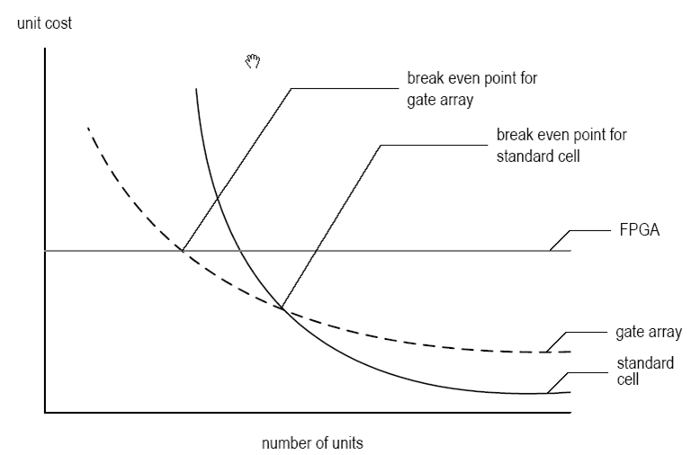
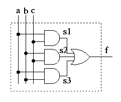

Lesson Notes for Lesson 1
example code for today's class
See lec01 folder in class github repoWhy Use Digital Systems?
- Advantages
- Reproducibility of information
- Flexibility and functionality: easier to store, transmit, and manipulate information
- Economy: Devices are normally cheap and easy to design
- Digital circuitry replaces many analog systems:
- Audio recording: from tape to music CD to MP3 (MPEG Layer 3) player
- Image processing: from silver-halide film to digital camera
- Telephone switching networks
- Control of mechanical systems: e.g., "fly-by-wire", as shown in the figure below

Admin
- Course Text: RTL Hardware Design Using VHDL: Coding for Efficiency,
Portability, and Scalability - Pong P. Chu (ISBN 0471720925).
Available from:
- GitHub We will be using GitHub this term. See HW1.
- Academic Integrity. When does working together become not okay?
- Digilent Nexys Video. Hand them out.
- Course web page: (https://usafa-ece.github.io/ece383/intro.html)
Course Goals
There are several goals for this course:- You will learn to practice digital design. You should know how to design complex digital systems. In this class, you will learn how to implement such circuits.
- You will gain hands-on experience using a variety of common devices. These devices are used by digital designers, and many have been used in Capstone design projects.
- You will be exposed to advanced techniques used in digital design. If you pursue an advanced degree, these are the topics that you may encounter.
- You will prepare for your Capstone design project by developing a final project idea, plan, and implementation.
Digital Implementation Methods
There is a spectrum of digital implementation methods. These can be grouped into three categories:- General-purpose hardware with custom software (i.e. microcontroller)
- General purpose processor
- Special purpose processor
- Custom software on a custom processor (known as hardware-software co-design) (i.e. softcore FPGA processor)
- Custom hardware (i.e. ASIC)
Digital Logic
If you need to solve an engineering problem, you have the following design paths to follow:
- Full-custom ASIC - All aspects of a circuit are tailored for a particular application
- Standard Cell ASIC - layout of gates and simple logic blocks
- Gate Array - layout uniform reconfigurable logic modules
- Simple Field Programmable Devices - Programmable device with simple internal structure (i.e. PROM and PAL)
- Complex field programmable logic device (FPGA) - specify the interconnection of logic modules
- Off-the-shelf SSI (Small Scaled IC)/MSI (Medium Scaled IC) components - Small parts with limited functionality
You can rate these design paths in terms of:
- Development time
- Unit Cost
- Task speed
- Power consumption
- Best for prototyping
- Best for high production volume
- Best time to market
The unit cost for a single chip is fabrication costs for that chip plus the engineering labor amortized over the number of units sold. This is represented in the figure below.

Types of Cost
There are three types of cost associated with digital systems:- NRE (Non-Recurrent Engineering) cost: one-time, per-design cost
- Part cost: per-unit cost
- Time-to-market cost: loss of revenue
The per-unit cost of a digital part can be modeled by the equation below.
Abstraction
Abstraction is a key part of developing digital systems. In this class, we will consider three main layers of our designs:- Behavioral view - Describes functionalities and I/O behavior
- Structural view - Describes the internal implementation (i.e. components and interconnects)
- Physical view - Describes the layout on a PCB
Digital System Design
VHDL
VHDL is, simply put, a language used to describe hardware circuits. You will find that it is a logically organized language that naturally utilizes the concept of hierarchical design - that is, breaking a complex system into components which themselves are composed of components. A piece of hardware in VHDL is described in two separate ways:- The Entity describes the inputs and outputs (treating the innards of a component as a 'black box')
- The Architecture describes what transformation the box performs. In other words, it describes the behavior of the component.
There are two good reasons to realize a design in VHDL: 1.) you can simulate the hardware specified and 2.) you can synthesize that same hardware. These concepts are covered in the following sections.
Simulation
When a design is simulated, you have complete control of time and the values of all the signals (wires) in your design. This greatly aids debugging because the entire design is transparent. In this course, we will use software called Xilinx Vivado to perform our VHDL simulations.Synthesis
Synthesis is the process of making the VHDL description "real". "Real" here means that the resulting circuit will have the same I/O and behavior as the VHDL description. Synthesis implicitly implies that there is a target piece of hardware to accept the synthesized VHDL description. In our class, we will use the Xilinx Artix-7 XC7A200T-1SBG484C chip as our target. This chip contains components (Configurable Logic Blocks - CLBs) which can be reconfigured using a special file called a bit file. The Xilinx software performs the translation between our VHDL code and the target FPGA chip.
Design Goals
When designing VHDL projects, there are many design goals to keep in mind:- Design for Efficiency
- Synthesis cannot convert bad designs into good ones
- Know what hardware your HDL will create
- Design for Large
- Design a large module
- Design to be incorporated into a larger system
- Design to facilitate the overall development process
- Design for Portability
- Device independent
- Software independent
- Design reuse
Majority circuit
Digital design is the process of taking an abstract idea for a digital system and implementing it. In order to make the process more manageable, we successively refine the design in steps, with each step being a little bit more real than the previous. Simple digital systems typically have a nice clean design process, as exemplified by the following problem:
Word Statement: Build a circuit (SOP min) with 3 bits of input and 1 bit of output. The output equals 1 when a majority of the three inputs equal 1.
Truth Table
a b c | f ------|-- 0 0 0 | 0 0 0 1 | 0 0 1 0 | 0 0 1 1 | 1 1 0 0 | 0 1 0 1 | 1 1 1 0 | 1 1 1 1 | 1
Kmap Recall how to do this from ECE 281.
Circuit Diagram Diagrams will be very important in VHDL design because, essentially, you will be writing a text description of your circuit. Notice in the diagram below that every wire which begins and ends inside the box is given its own label. These wires (labeled s1,s2,s3) are like local variables in a regular programming language. The inputs (a,b,c) and the output (f) are like the values that are passed into and out of a function in a programming language.

VHDL
In class, we will examine which of the lines below are reserved words and which are created by us, the programmer.-------------------------------------------------------------------- -- Name:<Your Name> -- Date:<The date you stated working on the file> -- Course: ECE 383 -- File:<This file's name> -- HW: <HW# and name> -- -- Purp:A brief description of what this program does and -- the general solution strategy. -- -- Doc: <list the names of the people who you helped> -- <list the names of the people who assisted you> -- -- Academic Integrity Statement: I certify that, while others may have -- assisted me in brain storming, debugging and validating this program, -- the program itself is my own work. I understand that submitting code -- which is the work of other individuals is a violation of the honor -- code. I also understand that if I knowingly give my original work to -- another individual is also a violation of the honor code. ------------------------------------------------------------------------- library IEEE; -- This line is EXACTLY like #include in C use IEEE.std_logic_1164.all; entity majority is port( a, b, c: in std_logic; f: out std_logic); end majority; architecture structure of majority is signal s1, s2, s3: std_logic; -- wires which begin and end in the component begin s1 <= a and c; -- These statements are called s2 <= c and c; -- concurrent signal assignments. s3 <= a and b; -- They all happen at the same time f <= s1 or s2 or s3; -- unlike a regular programming lang. end structure;
The real “meat and potatoes” of the VHDL description are the four lines in the architecture:
s1 <= a and c; s2 <= c and c; s3 <= a and b; f <= s1 or s2 or s3;What separates VHDL from a normal programming language is that these four lines are executed continuously in parallel. This implies that the order of the lines is completely irrelevant; any order of these four lines would work as well as any other. In addition, each of these lines is always in execution. This should make sense from a hardware perspective; each of the gates in the majority circuit is continuously examining its inputs and asserting an appropriate output.
Important Notes
In VHDL, you can use all of the standard logic gates, including:- AND
- OR
- XOR
- NAND
- NOR
- XNOR
- NOT
The “data type” std_logic can represent much more than just a logic 0 or 1. It can also represent:
- 'U', -- Uninitialized
- 'X', -- Forcing Unknown
- '0', -- Forcing 0
- '1', -- Forcing 1
- 'Z', -- High Impedance
- 'W', -- Weak Unknown
- 'L', -- Weak 0
- 'H', -- Weak 1
- '-' -- Don't care